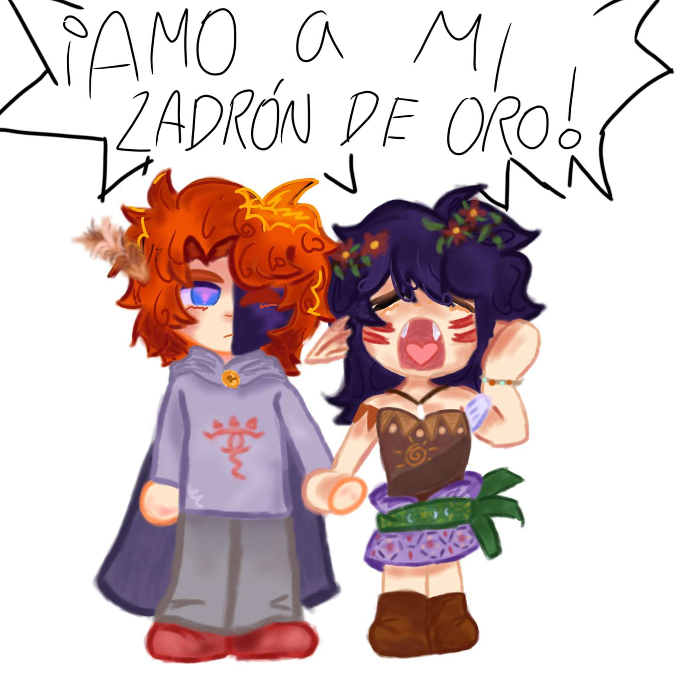
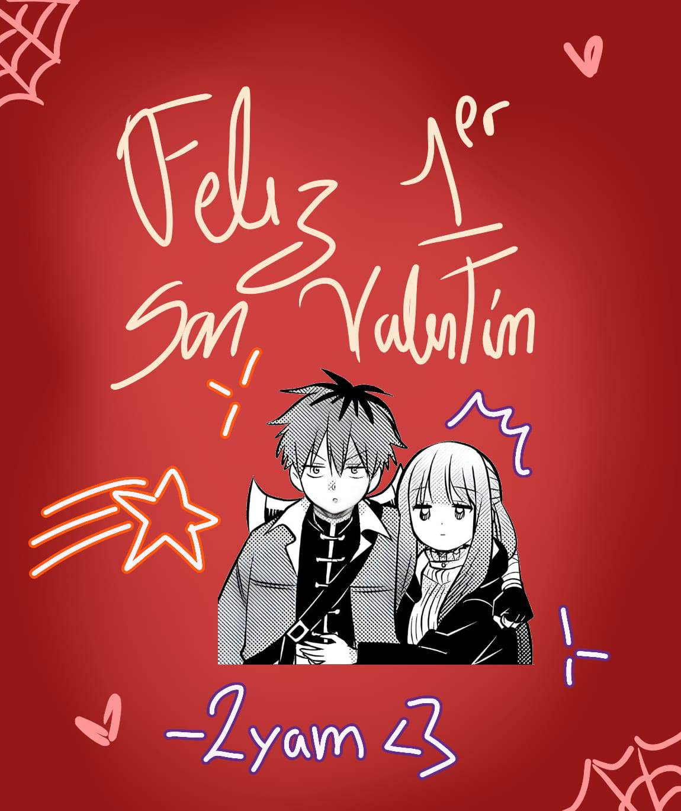
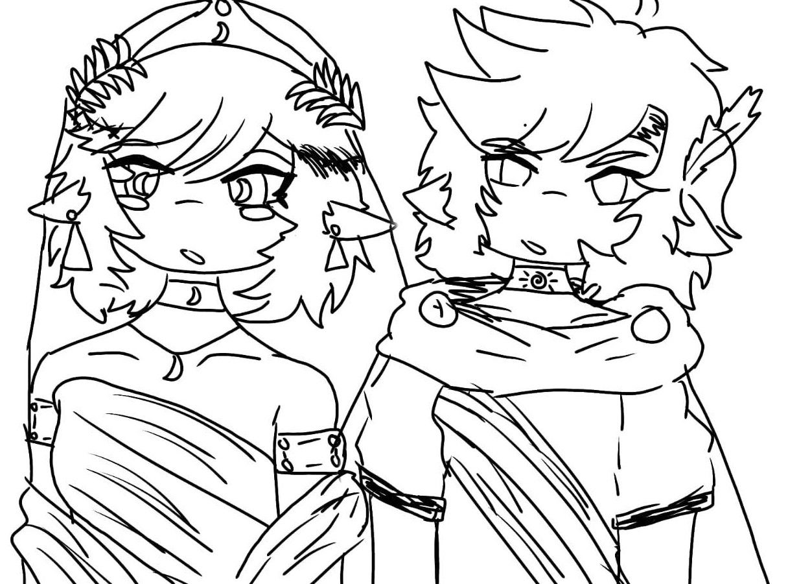
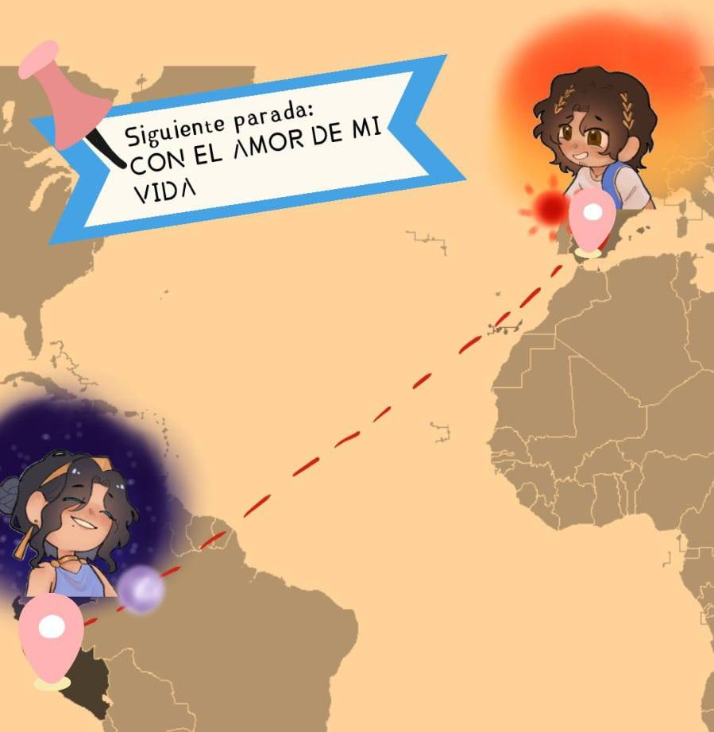
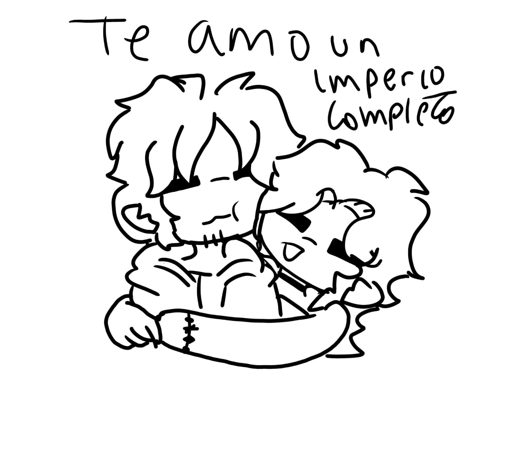
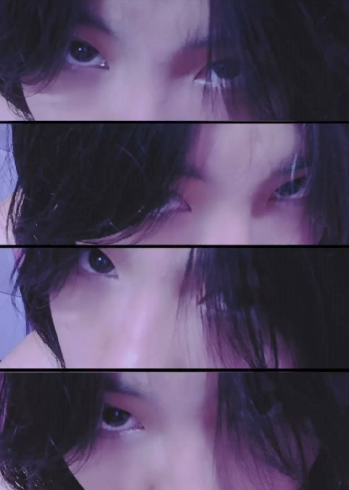

Peru💜💖España
Nuestro épico amor, más grande que la Odisea
Él tardó 20 años en volver... Yo no quiero estar ni un dia
Lyam,
No sé muy bien cómo empezar, así que empiezo por lo más simple "te amo". Te amo en morado, que para mi es tu color y el que me recuerda a ti
Estamos a miles de kilómetros, separados por un océano entero, y aun así eres lo primero en lo que pienso al despertar y lo último antes de dormirme. Eso, si me preguntas, no es magia. Es mi amor por ti.
Tú eres mi Penélope, mi Pe'neLype', la que espera, la que teje, la que sostiene todo con paciencia infinita. Y yo soy tu Nyadiseo, que por muy lejos que navegue, siempre con el objetivo de volver a Itaca.
No sería capaz de imaginarme una vida sin ti. Sin tus mensajes, sin la moto sin motor, sin Canela, sin Eve, John, Azi..., sin tu risa en llamadas que cruzan mares hasta mi corazon. Tú haces que la distancia valga la pena.
Esta página es un pequeño recorrido por lo que somos. Por lo que fuimos, por lo que superamos, y por todo lo que aún nos queda por escribir.
Tuyo, en morado y naranja,
— 💖Ansu🦊
Siete fechas.
No sabía que tu llegada al grupo haria tanta diferencia, como hablaste tu pasado y una pelea, iba a hacer que te conociera.
Tú diste el primer paso. La verdad tenía el corazón a mil, pero me dijiste que pensara la respuesta bien.
Desde ese día ya no éramos dos amigos hablando. Éramos una pareja aprendiendo a usar el idioma del amor.
Incluso Odiseo se perdió en el mar un tiempo. Pero la Odisea sin Aeolo no es Odisea.
Una mala epoca, fueron unos días grises. Los hilos se estiraron... Y ninguna flecha pasó por las hachas.
Y fue como si la tormenta nunca hubiera existido. Como volver a casa después de esos veinte años.
Reescribimos el final. Y esta vez, elegimos quedarnos. Juntos podemos a conquistar el mundo entero con nuestro amor






No podia no mencionar al niño de nuestro shipeo. Algo me dice que si Ben apareciera en nuestra llamada, lo adoptarías sin dudarlo.
My creapy de confort y el ship de tu niño. Igual de raro que Beni, igual de inolvidable, sabias que me recuerda a ti por tus gustos (Y si, no hablo de Pokemon)
La que espera, la que teje, la que nunca dejó de creer que Odiseo volvería. Una tú mas epica, mas antigua, pero no tan linda.
El que navega mil mares, enfrento ciclopes y aún así lo único que quiere es llegar a Itaca por su Penelope.
La distancia es solo un número. Lo nuestro cabe en una pantalla, en una llamada, en un sueño de noche. Y algún día ya no será un océano: será tu mano en la mía.